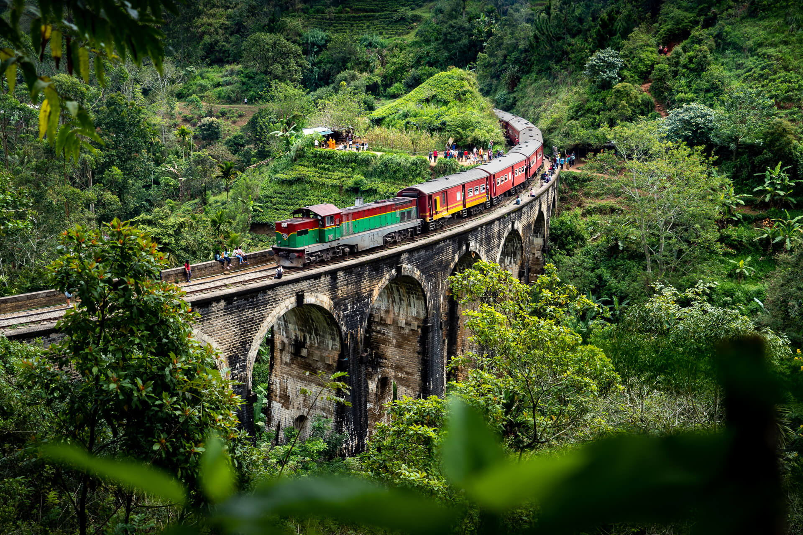
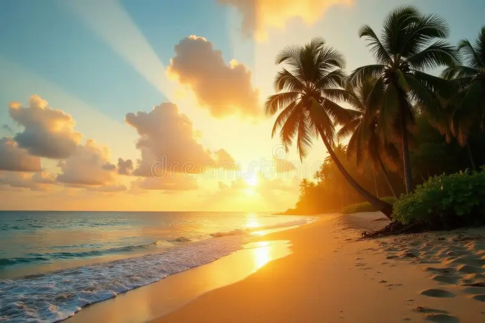

Where Mountains Meet the Sea in Perfect Harmony
From the rolling emerald tea hills of the central highlands to pristine tropical beaches, thundering waterfalls and ancient rainforests, Sri Lanka packs an incredible variety of landscapes.
Sri Lanka's coastline is a paradise of golden sands, turquoise waters, and vibrant marine life. From the surf-friendly shores of Arugam Bay to the tranquil beaches of Mirissa, there's a slice of paradise for every beach lover.
